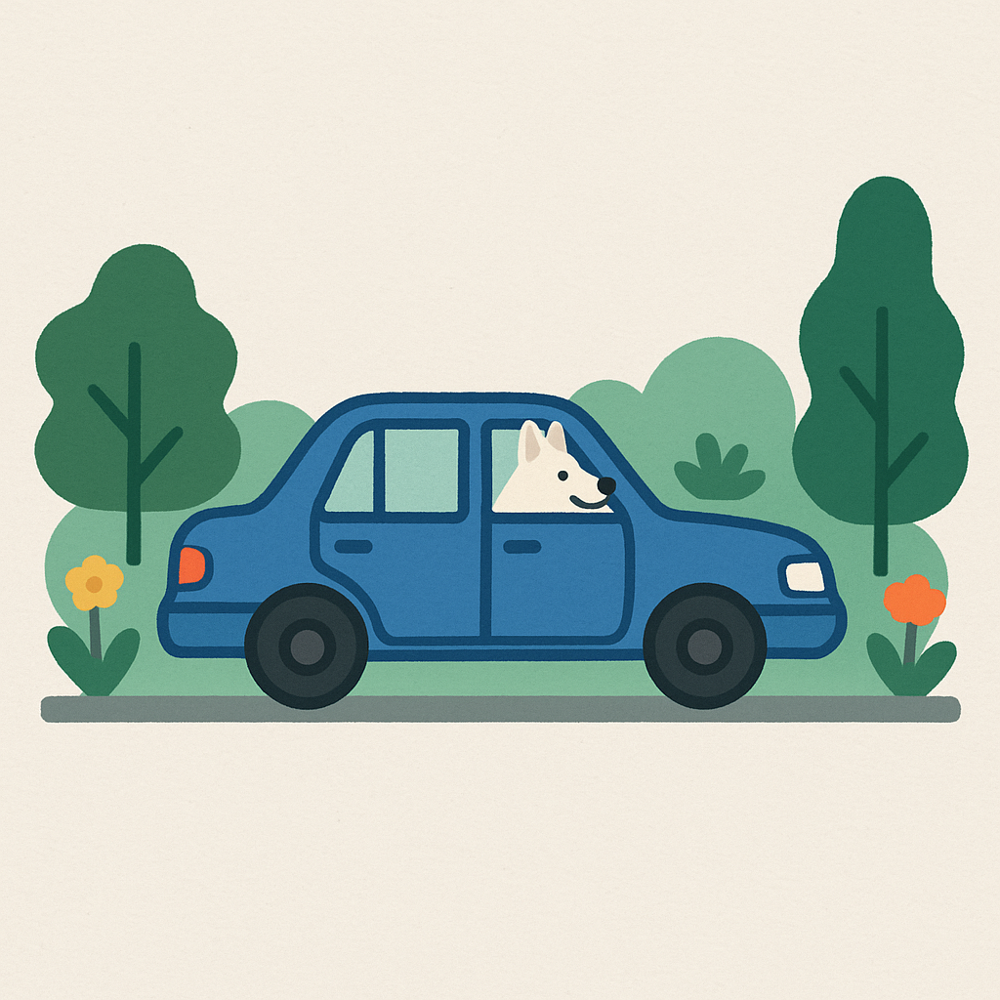

🌲 Verborgen Pareltjes van de Veluwe

Ontdek de mooiste, minder bekende plekken in de Veluwe - allemaal gemakkelijk bereikbaar met de auto
```
🔄 Laden...
Filter op categorie:
🌟 Alles
📍 Gebruik mijn locatie voor afstanden